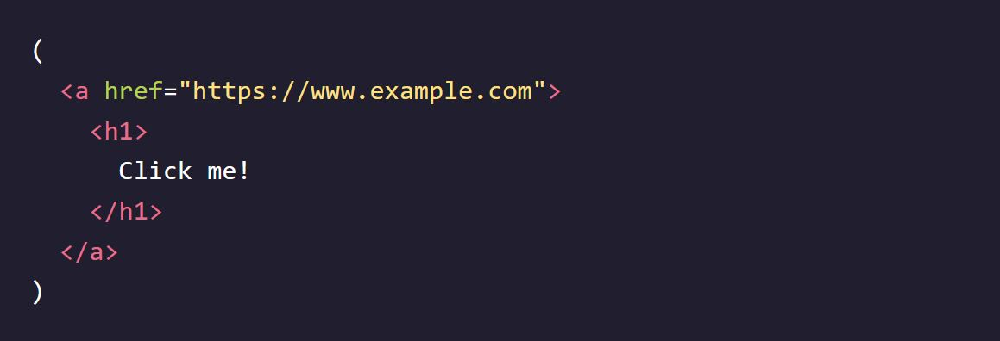

Codecademy - Learn React: Introduction
Notes taken while going through the Codecademy Learn React: Introduction course
Intro to JSX
Why React
- React is known for its speed and responsiveness, allowing apps to handle complex updates efficiently.
- React promotes modularity by breaking down code into smaller, reusable components, improving maintainability.
- It excels in scalability, making it suitable for large programs that involve frequent data changes.
- React is flexible and can be used for various projects beyond web app development, opening up opportunities for exploration.
- React's popularity in the industry makes learning and understanding it valuable, enhancing employability prospects.
What is JSX?
- JSX is a syntax extension for JavaScript used with React.
- JSX code resembles HTML and is written within JavaScript files.
- JSX is not valid JavaScript, so it needs to be compiled before it can be understood by web browsers.
- A JSX compiler translates JSX code into regular JavaScript.
- The compilation process ensures that the JavaScript file containing JSX is compatible with web browsers.
JSX Elements
- A JSX element is the basic unit of JSX syntax.
- JSX elements resemble HTML syntax.
- JSX elements are typically written within JavaScript files.
- JSX elements can be similar to their HTML counterparts but are found within JavaScript files instead of HTML files.

JSX Elements & their Surroundings
- JSX elements are treated as JavaScript expressions and can be used anywhere JavaScript expressions are allowed.
- JSX elements can be saved in variables:
- JSX elements can be stored in objects or arrays:
- JSX elements offer flexibility and can be manipulated and used like any other JavaScript expression.


Attributes in JSX
- JSX elements can have attributes similar to HTML elements.
- JSX attributes follow an HTML-like syntax: name="value" format.
- Attribute values are typically wrapped in quotes.
- A single JSX element can have many attributes, just like in HTML:


Nested JSX
- JSX elements can be nested inside other JSX elements, similar to HTML.
- For better readability, you can use line breaks and indentation, similar to HTML:
- If a JSX expression spans multiple lines, it should be wrapped in parentheses. 
- Nested JSX expressions can be assigned to variables or passed to functions like non-nested JSX expressions:

JSX Outer Elements
- A JSX expression must have exactly one outermost element.
- The opening tag of the JSX expression and the closing tag must belong to the same JSX element.
- The following would work fine:
- But this would not work and would throw errors:
- If you encounter an error due to multiple outer elements, the solution is to wrap the JSX expression in a
element or any other suitable parent element.
Rendering JSX Explained
- Rendering in React involves specifying what content to render and where to place that content.
- The render() method is used to render JSX expressions.
- To determine where to place the content, the first line uses the getElementById() method of the document object to get the HTML element with the specified ID ('app' in this case) and stores it in the container variable.
- The createRoot() function from the react-dom/client library is used to create a React root from the container, and the resulting root is stored in the root variable. This establishes the target location for rendering the content.
- Finally, the render() method of the root object is called, passing in the JSX expression (
Hello world
) as the content to be rendered. This triggers the rendering process, displaying the specified content in the designated location.


Passing a Variable to render()
- The render() method in React can accept a variable as its argument, as long as the variable evaluates to a JSX expression.
- In the example, a JSX expression representing a to-do list is saved in the toDoList variable.
- The createRoot() function is used to create a React root from the container element.
- The render() method of the root object is called, and the toDoList variable is passed as the argument. The JSX expression stored in toDoList will be evaluated and rendered in the designated location.

- The Virtual DOM
- When using the render() method in React, it only updates the DOM elements that have changed.
- If the exact same JSX expression is rendered twice in a row, the second render will not make any changes to the DOM.
- React achieves this efficient update process by utilizing the concept of the Virtual DOM.
- The Virtual DOM is a lightweight representation of the actual DOM.
- When changes are made to the React components, React compares the Virtual DOM with the previous version to identify the specific elements that need to be updated.
- Only the necessary changes are then applied to the real DOM, resulting in better performance and efficiency.
- The use of the Virtual DOM is one of the key factors contributing to React's success in efficiently updating and rendering UI components.
Review: Intro to JSX
- React is a modular, scalable, flexible, and popular front-end framework.
- JSX is a syntax extension for JavaScript which allows us to treat HTML as expressions.
- They can be stored in variables, objects, arrays, and more!
- JSX elements can have attributes and be nested within each other, just like in HTML.
- JSX must have exactly one outer element, and other elements can be nested inside.
- createRoot() from react-dom/client can be used to create a React root at the specified DOM element.
- A React root’s render() method can be used to render JSX on the screen.
- A React root’s render() method only updates DOM elements that have changed using the virtual DOM.
React: The Virtual DOM
The Virtual DOM Explained
- DOM manipulation, the process of updating the web page's structure, is slower compared to other JavaScript operations.
- Many JavaScript frameworks tend to update the DOM more than necessary, resulting in inefficiencies.
- React addresses this issue with the concept of the Virtual DOM.
- In React, there is a corresponding "virtual DOM object" for every real DOM object. The virtual DOM object is a lightweight copy of the real DOM object.
- The virtual DOM object has the same properties as the real DOM object but lacks the power to directly change what's displayed on the screen.
- When a JSX element is rendered, every virtual DOM object is updated.
- Updating the virtual DOM is much faster because it doesn't involve drawing anything on the screen. It's like editing a blueprint instead of moving rooms in a house.
- After updating the virtual DOM, React compares it with a virtual DOM snapshot taken before the update. This process is called "diffing."
- By comparing the new virtual DOM with the pre-update version, React determines which virtual DOM objects have changed.
- React then updates only the changed objects on the real DOM, rather than rebuilding the entire DOM. This selective updating is efficient.
- React's ability to update only the necessary parts of the DOM contributes to its reputation for performance and efficiency.
Advanced JSX
class vs className
- In HTML, the attribute name for defining the CSS class of an element is "class".
- However, in JSX, you cannot use the attribute name "class" because it is a reserved word in JavaScript.
- Instead, you need to use "className" as the attribute name in JSX.
- JSX is translated into JavaScript, and using "className" ensures compatibility and avoids conflicts with the reserved word "class".
- When the JSX is rendered, the "className" attributes are automatically translated and rendered as "class" attributes in the resulting HTML.


Self-Closing Tags
- In HTML, some elements like
and can be written with or without a closing slash before the final angle bracket. - However, in JSX, it is mandatory to include the closing slash in self-closing tags. Forgetting to include the slash will result in an error.
- Remember to always use the closing slash in self-closing tags in JSX to ensure proper syntax and avoid errors.

Curly Braces in JSX
- When you write code in between the tags of a JSX element, it is treated as JSX, not regular JavaScript.
- To indicate that you want a code snippet to be treated as regular JavaScript within JSX, you need to wrap it in curly braces {}.
- By using curly braces, you can execute JavaScript expressions and statements within JSX.
- Curly braces allow you to inject dynamic and executable JavaScript code within JSX elements.
Variables in JSX
- When you inject JavaScript into JSX, the JavaScript code has access to variables declared in the same environment.
- You can access variables while inside a JSX expression, even if those variables were declared outside the JSX code block.
- The value of the variable will be evaluated and inserted into the JSX during rendering.
Variable Attributes in JSX
- Variables can be used to set attributes in JSX by wrapping them in curly braces {}.
- Each attribute can be set on a separate line for better readability, especially when dealing with multiple attributes.
- Object properties can also be used to set attributes. You can access the desired property using dot notation or square brackets.
- By using variables and object properties, you can make your JSX code more dynamic and reusable, allowing for easy updates and customization.

Event Listeners in JSX
- JSX elements can have event listeners, similar to HTML elements.
- Event listeners in JSX are created by using a special attribute on the JSX element.
- The event listener attribute's name should follow the pattern of "on" + event type, such as onClick or onMouseOver.
- The value of an event listener attribute should be a function.
- The function clickAlert should be defined elsewhere in the code.
- In JSX, event listener names are written in camelCase, such as onClick or onMouseOver.
- In HTML, event listener names are written in all lowercase, such as onclick or onmouseover.
JSX Conditionals: If Statements that do Work
- In JSX, you cannot directly inject an if statement.
- One way to express conditionals in JSX is to write the if statement outside of the JSX code.
- The if statement can be used to conditionally determine which JSX code to render.
- By placing the if statement on the outside, there is no need for JavaScript injection within JSX tags.
- This approach is a common way to handle conditionals in JSX.

JSX Conditionals: The Ternary Operator
- The ternary operator, written as x ? y : z, is a compact way to write conditionals in JSX.
- It works the same way in React as it does in regular JavaScript.
- The ternary operator is commonly used in JSX expressions.
- Inside the curly braces of a JSX expression, you can use the ternary operator to conditionally render different content.
- The expression before the question mark (?) is evaluated and determines whether it is truthy or falsy.
- If the expression is truthy, the value before the colon (:) is returned. Otherwise, the value after the colon is returned.
- The ternary operator is often used to conditionally render different JSX elements or to assign different values to variables based on a condition.
- In the provided example, the ternary operator is used to conditionally set the value of the headline variable based on the comparison between age and drinkingAge.
JSX Conditionals: &&
- The && operator is another way to write conditionals in JSX, commonly used for rendering content conditionally.
- It works similarly to the logical AND operator in JavaScript.
- If the expression on the left of the && is true, the JSX on the right of the && will be rendered.
- If the expression on the left is false, the JSX on the right will be ignored and not rendered.
- The && operator is useful for conditionals that should sometimes perform an action and other times do nothing at all.
- It can help simplify conditional rendering by avoiding the need for additional if statements or ternary operators.
- In the provided example, the && operator is used to conditionally render different list items based on the values of baby and age.
- The list item containing "Pizza" will be rendered if baby is false.
- The list items containing "Brussels Sprouts", "Oysters", and "Grappa" will be rendered based on the different age conditions.
- Only the list items corresponding to true expressions will be included in the final JSX output.

.map in JSX
- The .map() method is commonly used in React to create a list of JSX elements efficiently.
- When you have an array and want to transform each element into JSX, you can use .map() to iterate over the array and return a new array of JSX elements.
- In the provided example, the array strings contains a list of strings.
- By calling .map() on strings, we create a new array listItems where each string is transformed into an
- element.
- The arrow function is used as the transformation function in the .map() call. It takes each string as input and returns the corresponding JSX
- element.
- The {listItems} expression is used to include the array of JSX elements in the JSX code. It will be evaluated to the array of
- elements.
- JSX elements don't have to be in an explicit array. You can directly include them as individual elements.
- Alternatively, you can store the JSX elements in an array, like liArray, and include the array using curly braces, like {liArray}.
Keys
- Keys are JSX attributes used to uniquely identify elements in a list.
- Keys are necessary when you have a list where the items need to maintain their memory or when the order of the list might be shuffled between renders.
- Keys are not used for any visible effects in the rendered output. They are used internally by React to optimize list rendering and ensure correct item ordering.
- If you omit keys when they are required, React may mistakenly reorder the list items or cause other issues.
- If your list items don't have memory or the list order is static, you may not need to use keys. However, it's generally recommended to use keys if you're unsure or if your list might have dynamic changes.
- Using unique and stable values as keys, such as IDs or unique identifiers from data, is recommended to ensure consistent behavior and performance in React.
- In the example above, we're using the .map() method in order to help us create unique keys
React.createElement
- JSX is a popular syntax extension for writing React code, but it is possible to write React code without JSX.
- JSX elements are compiled into calls to React.createElement().
- The React.createElement() method takes three arguments: the element type, the element's properties (or "props"), and the element's children.
- The first argument of React.createElement() is the type of the element, in this case, the string "h1".
- The second argument is an object representing the element's properties or attributes. Since no properties are specified in the example (null is passed), it is equivalent to providing an empty object {} in JSX.
- The third argument is the children of the element, in this case, the string "Hello world".
- React.createElement() returns a React element that can be rendered in a React component.